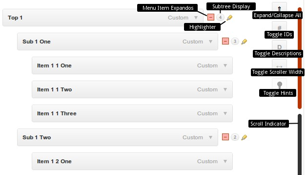

Here are some tips on using the Menu Management Enhancer. Please take a minute to read through this manual before contacting me directly. If you've tried this manual and it hasn't solved your issue, please check out the online documentation at
menumanager.sevenspark.com/help for the latest version of this manual.
If you find your problem is not solved through either of these means, please contact me as described on my
profile page. Please use the account you used to purchase the plugin and describe the means you've attempted to solve the problem when you contact me. Thanks!
Menu Management Enhancer for WordPress adds enhanced features to the backend of the WordPress Menu System (that's the page in Appearance > Menus where you build your menu).
Manage large numbers of menu items with ease
Expand and collapse the menu tree to save space
Quickly jump to any top level menu item
Enhanced drag & drop jump-to-item feature
Requirements
WordPress 3.2+
jQuery 1.6.1 (comes with WordPress 3.2)
PHP 5.2+
Use of the WordPress 3 Navigation Menu System
Use of a modern browser, like Firefox or Chrome.
Installation & Setup
Upload via WordPress Control Panel
Log into WordPress and navigate to Plugins > Add New > Upload
Select the .zip file you downloaded from CodeCanyon and click Install Now
Enter your FTP information if necessary and install the plugin
Activate the plugin
Alternatively, upload via FTP
Decompress the .zip file you downloaded from CodeCanyon.
Upload the menu-management-enhancer folder to your wp-content/plugins directory.
Navigate to your Control Panel: Plugins
Under Menu Management Enhancer, click Activate
Menu Management Enhanced Tools and Features

All options are available in Appearance > Menus
Menu Item Expandos
Expand and contract the submenu items in this item's tree.
Subtree Display
This display shows the number of children a menu item has at a glance. Hover over it to reveal the total number of descendents (in the tooltip).
Highlights
The highlighter highlights the submenu tree for this item. Hover over it to reveal the highlight. This allows you to see the extent of this item's tree at a glance.
Scroll Indicator
The scroll indicator has a "sausage" section for each top level menu item.
Hover over each section to see the name and ID of the menu item to which it corresponds.
Click a section to scroll that menu item into view.
Shift + Hover over a section to scroll that menu item into view (very useful when dragging menu items over long distances).
Expand/Collapse All
Expands or collapses all menu items (current state of individual menu items is ignored)
Toggle Menu IDs
Display the ID of the LI element for each menu item. These IDs are present on the front-end and are useful for styling.
Toggle Descriptions
Quickly toggle Descriptions on and off to save space. This is the same as clicking in the Description checkbox in the Screen Options, just more convenient.
Toggle Scroller Width
Sometimes it's just easier to have a wider scroller for easier clicking/hovering
Hints
Toggle Tooltip hints on and off. Hover over a hint to highlight it. Explains everything above in-browser so you don't really even need this doc.